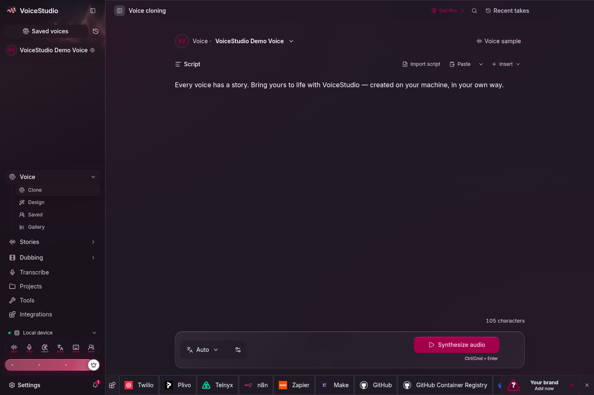
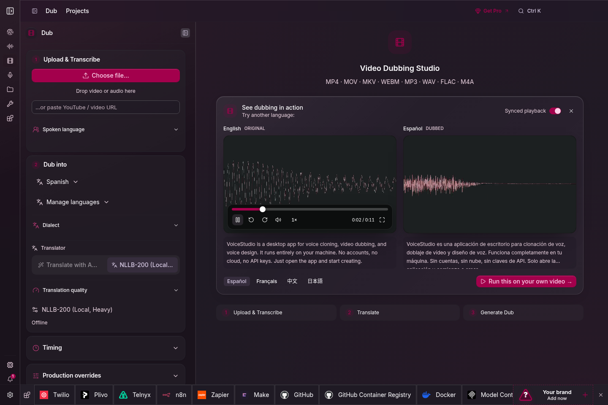
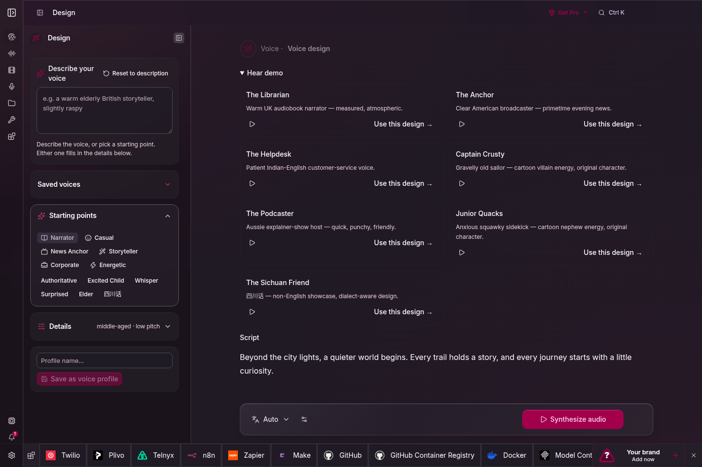
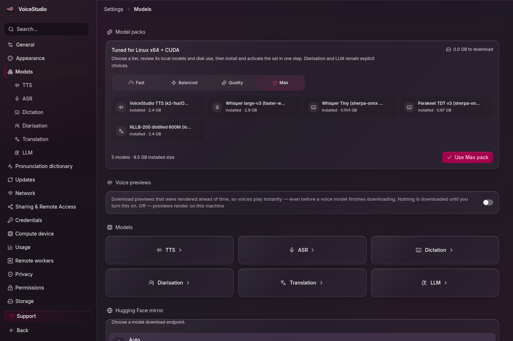

VoiceStudio (Repost)
Reposted from the VoiceStudio README on GitHub. Copyright 2024-present Palash Debnath and VoiceStudio contributors, licensed under the GNU AGPL-3.0. Converted to this post on 2026-10-28: the view-counter image was removed and the image layout was adapted. This post is also under the AGPL-3.0.

The local voice studio: clone, design, dub, dictate, transcribe and narrate in 646 languages.
Runs on your own computer and phone. No accounts, no API keys, and nothing leaves your device unless you say yes.
Website · Download · Get started · Docs · Discord · 简体中文 · 日本語 · 한국어 · Русский


Strategic sponsor

What you can do
| Create | Produce | Connect |
|---|---|---|
| Clone a voice or design your own | Dub videos with timed speech | Local API & MCP for agents |
| Dictate with a floating widget | Stories, audiobooks & batch jobs | Reusable recipes & watch folders |
Start with VoiceStudio (default, powered by k2-fsa/OmniVoice), or pick from dozens of other engines in the Model Manager. See the features & engine catalog.
Screenshots
 |  |
| Voice cloning | Video dubbing |
 |  |
| Voice design | Local models |
Platforms
| Platform | Download | Acceleration | Status |
|---|---|---|---|
| macOS (Apple Silicon) | .dmg · guide |
Metal (MPS) | Stable |
| Windows 10/11 (x64) | .exe · guide |
NVIDIA CUDA · AMD ROCm (opt-in) · CPU | Stable |
| Linux (x64) | .AppImage · .deb · snap · Nix · guide |
NVIDIA CUDA · CPU | Stable |
| Docker | ghcr.io/debpalash/voicestudio |
NVIDIA CUDA · AMD ROCm | Stable |
| Android 10+ | .apk · guide |
On-device, offline | Preview |
| iPhone / iPad (iOS 17+) | .ipa (sideload) · guide |
On-device, offline | Preview |
| Windows on ARM | .exe · guide |
CPU (x64 backend under emulation) | Experimental |
| Intel Mac | .dmg · why |
App UI only, connects to a remote backend | Limited |
Desktop and phone installers are on the latest release; Docker images come from GHCR. No GPU? The app is fully usable on the CPU, just slower. Native GGUF engines can also use Vulkan on AMD, Intel and NVIDIA GPUs; OmniVoice GGUF picks its GPU and model size automatically on Windows and Linux (OmniVoice, CosyVoice). Speed by engine and hardware: performance.
Get started
macOS / Linux
1 | curl -fsSL https://voicestudio.sh/install | sh |
Windows (PowerShell)
1 | irm https://voicestudio.sh/install.ps1 | iex |
Or download an installer from the table above. Then open Voice cloning, pick a voice or add a clean reference recording, type your text and generate. The app asks before it downloads any model.
Note
On macOS, “VoiceStudio is damaged and can’t be opened” means Gatekeeper blocked the app, not that the download is broken. See the Gatekeeper fix.
More install options: a specific version, current main, uninstall, from source, with a coding agent
1 | curl -fsSL https://voicestudio.sh/install | sh -s -- --version X.Y.Z # a specific release |
If voicestudio.sh is unreachable, run the script straight from the repository: curl -fsSL https://raw.githubusercontent.com/debpalash/VoiceStudio/main/scripts/install.sh | sh. Prerequisites and behavior: installer guide.
From source
1 | git clone https://github.com/debpalash/VoiceStudio.git |
See Electron setup.
With a coding agent (Claude Code, Codex, Cursor, …), paste:
1 | Install the VoiceStudio app on this device and verify it works, following |
Upgrading from 0.5.3 or older (the Tauri app)? Install the new app separately.
Documentation
| Need | Start here |
|---|---|
| Setup help | Troubleshooting · Model downloads |
| Guides | Multi-speaker dubbing · Expressive speech · Exporting dubs |
| Models & quality | Engine guides · whisper.cpp ASR · Benchmarks |
| Integrations | Local API · MCP · Examples |
| Phone apps | iOS and Android |
| Development | Contributing (sign the CLA before your first PR) · Changelog |
Agent skills: npx skills add debpalash/VoiceStudio (voicestudio for audio work, voicestudio-maintainer for the repo).
Sponsors
VoiceStudio is free and has no paid cloud behind it. Sponsors keep it shipping: they fund maintainer time, test hardware, code-signing and release infrastructure.

Your logo could be here. Development, Company and Strategic sponsor slots are open, from $100 a month; Community sponsors ($25) get a named link. Sponsorship buys recognition, not features.
Ko-fi · PayPal · Tiers and benefits · Get your logo listed
Team
Core team
Palash Debnath Creator and Core Team palash.dev · GitHub · X |
Shimul Debnath Core Team shimul.me · GitHub · X |
Contributors
Thank you to everyone who sends code, reports, translations and ideas. All contributors · Contribute
License & responsible use
AGPL-3.0 covers the app, including commercial use under its terms. Model weights, voices and generated output have their own licences, which the Model Manager shows for each model (inventory). Clone a voice only with its owner’s permission. Details: LICENSE-NOTICE.md.